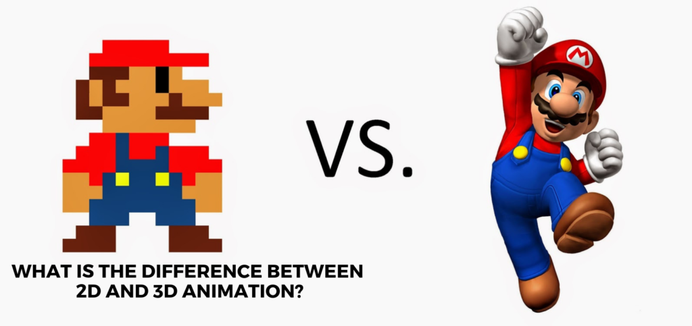
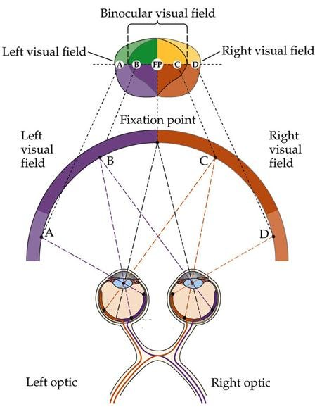

3D Reconstruction에 대하여
나에게는 신세대 같은 기술일지라도 이미 구세대가 되어버린 것


11월 첫 포스팅이다. 뭐 많이 늦긴 했지만 최근 컴퓨터 비전에서는 평면 처리에서 입체 즉, 2D에서 3D로 넘어가는 행보가 자주 보이는 것 같다. 아 사진은 3D Reconstruction의 예시로 여러 장을 사진을 합쳐 3D로 변환하는 기술인 SFM이다. * 이미지 출처
그 큰 변화를 보여준 것은 바로 Tesla AI Day 이다. Tesla AI Day 에서 BiFPN을 활용하여 SLAM을 구현함을 보여주면서 큰 변화를 맞았다고 생각한다. 근데 그냥 이건 내 느낌일 뿐이다. Meta 또한 2018년 부터 이를 준비해왔고 (관련 기사) ORB-SLAM, ORB-SLAM2, SFM 등 3D Mapping 논문이 나온지는 이제 5, 6년이 되어간다. ORB-SLAM2가 2015년에 나왔으니 뭐...
오늘은 큰 이슈에 대한 내용보다는 왜 3D Reconstruction 이 사용되어야 하고 왜 중요하고 어떤 기술인지에 대해 좀 더 얘기를 해볼 예정이다.
3D Reconstruction 이 사용되어야 하는 이유
자 우리는 컴퓨터를 어떻게 활용하고 있는지 생각해보자. 역사적으로 우리는 질 좋은 삶을 위해서 사람 대신 일하는 기계를 만들어왔다. 사람 대신 일하는 기계를 완벽히 구현하기 위해서는 사람과 같은 지능과 감각을 갖고 있어야 한다. 뭐 촉각이나 미각은 모를지언정 사람에게 가장 인상적이고 가장 많은 영향을 미치는 것은 다름 아닌 시각이다. 우리는 3D에 살고 있지만 지금 이 화면은 아마 2D 화면으로 보일 것이다. 무슨 말인지 이해가 안되는가?
이러면 이해가 쉬울 것이다. 왼쪽이 2D 즉, 평면의 형태이다. 입체가 아니다. 입체처럼 보이기 위해 만들어진 것이 FPS 같은 것이 있다. 즉, 우리가 2차원이 어떻게 구성이 되어 있고 우리가 2차원을 활용하고 가공할 수 있는 이유는 삼차원에 살고 있기 때문이다. 오른쪽은 물체의 깊이감이 느껴지는 삼차원이다. 우리의 삶에서도 빛의 반사, 그림자, 조도, 반전 등을 통해서 삼차원 물체임을 느끼게 된다. 그렇다면 우리가 어떻게 삼차원 물건인지를 느끼게 될까? 뭐 여러 방법이 있겠다만 일단 사람의 눈은 2개이다. 이게 무슨 상관인가 싶지만 이걸 보면 조금이나마 이해가 되지 않을까 싶다.
사람의 두 눈은 에서 시야가 겹치는 부분이 존재한다. 이걸 Fixation point라고 부르는데 사진에서는 B ~ C 부분이 될거다. 여기서 우리는 양쪽 눈의 이미지가 합성이 되어 물체를 삼차원으로 보게 되는 것이다. 그렇기에 두개의 눈이 필요하여 생겨난 것이고 3D Reconstruction에서도 Stereo Camera 혹은 Multiple-Camera가 사용되는 가장 큰 이유이다. 아 물론 최근에는 RGB-D Camera로 이를 보완하여 Monocular 카메라로 대체가 가능하다지만 이 또한 가상의 오른쪽 카메라를 생성하여 3D로 변환하는 과정이 추가 된 것 뿐이다. XBOX Kinect에도 Depth Sensor와 2개의 Camera가 탑재 되어 있다. 사람의 행동을 정확히 인식하기 위함이다. (추가 설명)
그렇다면 왜 우리는 3D Reconstruction을 써야하는가? 사실 이미 대답은 나왔다. 사람의 일을 완벽하게 대체하기 위해서 이다. 사람의 행동과 동일하게 보여주기 위함이다. 나는 그리 생각한다. 사실 이 대답 자체가 왜 3D Reconstruction이 중요한지도 대답하는 격이 된 것 같아 계속 이어 작성하겠다.
Waymo의 자율주행 시스템을 보면 조금은 이해가 될 거다.

Waymo의 3D Mapping
개인적으로 현재 Tesla 보다 Waymo의 3D Mapping 기술은 뛰어나다고 생각한다. 근데 이게 당연하다고 생각되기도 하는게 일단 Waymo에서는 Vision, LiDAR, Radar 외에 여러 센서를 동시다발적으로 사용한다. 이게 가능한 이유는 일단 업종 자체가 달라서 가능한데 이거는 나중에 얘기하고...
무튼, 구현된 모습을 보면 거의 사람이 보는 것과 동일하다. 어쩌면 사람보다 더 정확하다. 지금 자율주행 자동차는 사람의 운전 면허증 그 이상의 실력을 보여주는 것이다. 근데 이게 왜 중요하냐. 사람이 운전을 할때 앞 차 와의 간격, 속도, 갑작스러운 물체에 등장(?), 급정거 등 을 고려한다. 이는 모두 삼차원 물체임을 감지하고 가늠을 하는건데 2차원 평면 데이터 처리를 한다 했을 때 간단한 객체인식 외에 가능한게 있을까? 개인적으로는 없다고 본다. 저자의 말이 다 맞는건 아니다. 개인적인 생각이 담긴 내용일 뿐 참고만 하시길
어떤 기술인지도 설명을 솔직히 할 필요가 없을거 같다. 이미 다 설명을 해버린 격인지라. 그래서 뭐 더 할말은 없을거 같다만, 왜 지금 사람들이 이것에 집중하고 있는지 나의 생각에 대해서 작성을 해보면 Metaverse와 시간의 흐름 이랄까. 2차원에서 할 수 있는짓은 거의 다 해본거 같다. 이제는 2차원 이미지에 Depth를 찾아내는 모델도 나왔으니 뭐 할 건 다하지 않았나 싶다.